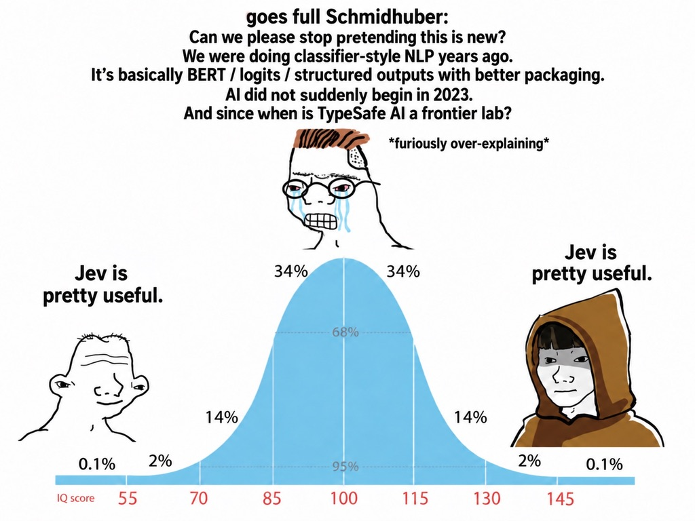

Training · Jev by TypeSafe AI
There's a lot of magical thinking about Jev right now. This is an attempt to sort out what it's actually for.
The debate right now

Yes, Jev is a classifier, and classifiers are old. It's still really useful. The next ten minutes are about why.
Sebastian Raschka has built text classifiers for 15 years. He started out assuming he could knock up his own Jev, then found it worked better than he expected. His summary: "the ChatGPT moment for classification".
Start with what isn't new · same task, 65 years: is this movie review positive?
The old rule of thumb: a cheap LLM for one-off decisions, a fine-tuned classifier for jobs you repeat. Jev covers most of both. Every IMDb model above Jev was trained on 25,000 labelled reviews. Jev scored 96.5% on the 25,000 test reviews without seeing any, for $0.65 in 22 minutes. It may have seen IMDb in training. Source: Sebastian Raschka, Ahead of AI
Then LLMs arrived
Calibrated = when it says 80%, it's right about 80% of the time. Chat models are trained to give answers people prefer, which pushes them to sound sure. How well they're calibrated varies a lot by model and by how you ask.
Illustrative curves, not measured data. Points on the diagonal = honest probabilities.
What Jev changes
Chat models are rewarded for answers people like. Jev is rewarded for probabilities that match reality. TypeSafe hasn't published how; a similar published method (RLCR) scores answers like this:
Bluffing costs 20× more than admitting doubt.
Forcing an LLM to answer A/B/C/D changes the interface, not the training. Raschka found open clones score 83–92% on IMDb; Jev scores 96.5%.
The API in one slide · real responses
Confidence is high when one answer gets most of the probability and low when it's spread out. Flip to the ambiguous ticket and watch it drop. Your code decides what low means: ask for a check, or hand it to a person.
Fan-out · measured today
Questions run in parallel and in isolation, so they don't pollute each other. You pay for the document once.
Cost · $0.042 per million input tokens, output free
The LLM row is one call per question (each re-reads the document) and ignores output tokens, which flatters the LLM. $0.05 is GPT-5 Nano's input price as quoted by Simon Willison. The classifier row assumes 500 labels per question and ignores training and maintenance.
Can you trust the confidence? · Jev vs GPT-6 Luna, 500 human-labelled messages per task
average confidence when wrong when right A wide gap means you can use the number to catch mistakes.
Luna says 0.8–0.9 even on its mistakes, so a threshold can't separate them. Jev's confidence drops, so "below 0.8, send to a person" actually catches errors. Luna is slightly more accurate on the 77-way task; Jev is 5× faster. Careful with the usual calibration score (ECE): on spam it rates Luna better (0.012 vs 0.045), because an always-confident model looks fine on an easy dataset. Source: Paul Ravvich, jev-bench (LLM asked to state its confidence). "When wrong" averages recomputed by us from his raw predictions.
Now the important bit
Kahneman's fast, intuitive thinking. Jev doesn't reason, explain, write, or do maths. It makes the kind of call a knowledgeable person makes in a few seconds.
Where it breaks · measured today
Rule of thumb from TypeSafe's own "jaggedness" docs: numbers, dates, counting, multi-hop logic, long irrelevant context → do it in code. When a probability lands in the shaded band, Jev is telling you it doesn't know. Believe it.
The question everyone asks
Click to flip. Which of these are System 1 questions?
Someone spent $1,000 finding out · Theo (t3.gg), 26 Sep
| DeepSWE, 20 tasks | Score | $ / task | Min / task |
|---|---|---|---|
| Jev Router | 80% | $1.50 | 19.9 |
| GPT-6 Astra low | 80% | $1.46 | 4.6 |
| GPT-6 Astra xhigh | 85% | $4.42 | 12.8 |
"In order to know how much thinking a task requires, you have to think."
The router sent 59% of calls to DeepSeek 4.1 Flash ("basically just a DeepSeek 4.1 flash router") and averaged 104 agent steps per task against Astra's 19. It's a small sample (20 tasks, 1 attempt each) and it tests the router product rather than Jev's classification. Still, the practical answer is to just pick a decent model.
Same model, different question design · PhishNChips, 2,000 emails
| Phishing detection | Accuracy | $ / 1k emails |
|---|---|---|
| Jev, "is this phishing?" | 62.6% | $0.038 |
| Claude Haiku 4.5, one verdict | 81.3% | $0.46 |
| Jev, 5 narrow signals + weights | 95.0% | $0.038 |
| Haiku 4.5, 5 signals | 93.2% | $1.02 |
Decomposition took Jev from worst to best, at 12–27× lower cost and 239 ms vs 687 ms median latency.
The weights were fitted on 1,000 labelled emails and tested on the other 1,000, so decomposition still needs some labels, just far fewer than training a model. Source: Anissel B., 17 Sep 2026
The fix: decomposition · real responses
Income, debt-to-income and credit history stay in code and bureau data. Jev only reads the free text.
But
Jev makes judgments cheap. It doesn't make your criteria right, or unbiased. What you can do is test each small question on 50 human labels, and run counterfactuals: swap the name, does the score move? You can't do that with one big "is this a good applicant?"
Simon Willison asked Jev "Good city?" of every Bay Area city: Cupertino came top, East Palo Alto bottom. The bias is in the model either way. Small questions at least give you a chance of finding it.
Where it's transformational
The one test to take home
Would a smart person know in five seconds?
Yes → Jev. Decompose, threshold on confidence, keep the maths in code, and test each question.
No → an LLM, a reasoning model, or a human.